Eigensystems¶
This chapter describes functions for computing eigenvalues and eigenvectors of matrices. There are routines for real symmetric, real nonsymmetric, complex hermitian, real generalized symmetric-definite, complex generalized hermitian-definite, and real generalized nonsymmetric eigensystems. Eigenvalues can be computed with or without eigenvectors. The hermitian and real symmetric matrix algorithms are symmetric bidiagonalization followed by QR reduction. The nonsymmetric algorithm is the Francis QR double-shift. The generalized nonsymmetric algorithm is the QZ method due to Moler and Stewart.
Real Symmetric Matrices¶
- eigen.symm(A[, order])¶
This function computes the eigenvalues and eigenvectors of the real symmetric matrix A. The default ordering of the eigenvalues and eigenvectors is descending order in numerical value. You can however choose from the following sorting shemes for the eigenvalues:
- ‘desc’
descending order in numerical value
- ‘asc’
ascending order in numerical value
- ‘abs_asc’
ascending order in magnitude
- ‘abs_desc’
descending order in magnitude
- ‘none’
eigenvalue sorting
The function returns:
eval, evec = symm(A, 'abs_asc')
while the first eigenvalue correpsonds to the first eigenvector stored in the first column of the eigenvectors matrix. For real symmetric matrices, the library uses the symmetric bidiagonalization and QR reduction method. This is described in Golub & van Loan, section 8.3. The computed eigenvalues are accurate to an absolute accuracy of 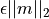, where
 is the machine precision.
is the machine precision.
Real Nonsymmetric Matrices¶
- eigen.non_symm(A [, order ] ])¶
The solution of the real nonsymmetric eigensystem problem for a matrix A involves computing the Schur decomposition
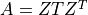
where Z is an orthogonal matrix of Schur vectors and T, the Schur form, is quasi upper triangular with diagonal 1-by-1 blocks which are real eigenvalues of A, and diagonal 2-by-2 blocks whose eigenvalues are complex conjugate eigenvalues of A. The algorithm used is the double-shift Francis method.
This function computes eigenvalues and right eigenvectors of the n-by-n real nonsymmetric matrix A. The computed eigenvectors are normalized to have unit magnitude. On output, the upper portion of A contains the Schur form T:
eval, evec, A = non_symm(A, 'abs_asc')
Complex Hermitian Matrices¶
Real Generalized Symmetric-Definite Eigensystems¶
- eigen.gensymm(a, b)¶
The real generalized symmetric-definite eigenvalue problem is to find eigenvalues lambda and eigenvectors x such that
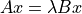
where A and B are symmetric matrices, and B is positive-definite. This problem reduces to the standard symmetric eigenvalue problem by applying the Cholesky decomposition to B:
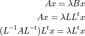
Therefore, the problem becomes 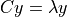 where 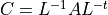 is symmetric, and 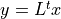. The standard symmetric eigensolver can be applied to the matrix C. The resulting eigenvectors are backtransformed to find the vectors of the original problem. The eigenvalues and eigenvectors of the generalized symmetric-definite eigenproblem are always real.
Complex Generalized Hermitian-Definite Eigensystems¶
- eigen.genherm(a, b)¶
The complex generalized hermitian-definite eigenvalue problem is to find eigenvalues lambda and eigenvectors x such that
where A and B are hermitian matrices, and B is positive-definite. Similarly to the real case, this can be reduced to where 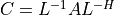 is hermitian, and 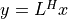. The standard hermitian eigensolver can be applied to the matrix C. The resulting eigenvectors are backtransformed to find the vectors of the original problem. The eigenvalues of the generalized hermitian-definite eigenproblem are always real.
Real Generalized Nonsymmetric Eigensystems¶
- eigen.gen(a, b)¶
Given two square matrices (A, B), the generalized nonsymmetric eigenvalue problem is to find eigenvalues lambda and eigenvectors x such that
We may also define the problem as finding eigenvalues mu and eigenvectors y such that
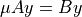
Note that these two problems are equivalent (with lambda = 1/mu) if neither lambda nor mu is zero. If say, lambda is zero, then it is still a well defined eigenproblem, but its alternate problem involving mu is not. Therefore, to allow for zero (and infinite) eigenvalues, the problem which is actually solved is
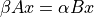
The eigensolver routines below will return two values
 and
and  and leave it to the user
to perform the divisions 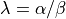 and 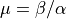.
and leave it to the user
to perform the divisions 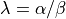 and 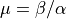.If the determinant of the matrix pencil 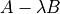 is zero for all
 ,
the problem is said to be singular; otherwise it is called regular.
Singularity normally leads to some 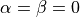 which means the eigenproblem is ill-conditioned
and generally does not have well defined eigenvalue solutions.
The routines below are intended for regular matrix pencils and could yield unpredictable results when applied to singular pencils.
,
the problem is said to be singular; otherwise it is called regular.
Singularity normally leads to some 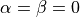 which means the eigenproblem is ill-conditioned
and generally does not have well defined eigenvalue solutions.
The routines below are intended for regular matrix pencils and could yield unpredictable results when applied to singular pencils.The solution of the real generalized nonsymmetric eigensystem problem for a matrix pair (A, B) involves computing the generalized Schur decomposition
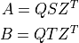
where Q and Z are orthogonal matrices of left and right Schur vectors respectively, and (S, T) is the generalized Schur form whose diagonal elements give the
and values.
The algorithm used is the QZ method due to Moler and Stewart (see references).